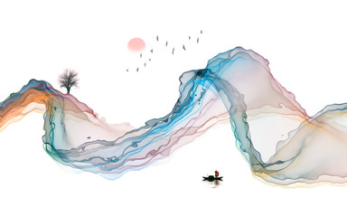
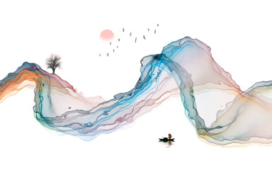

.
.
 .
.  

Virtual art exhibition text refers to the words displayed within a digital art exhibition to provide context and information about the artworks, often formatted as labels on walls, in digital booklets, or as accompanying text on web pages. To create this text, artists and curators can use design programs to create text files or graphics, which are then uploaded and positioned within a virtual exhibition platform, such as ArtPlacer, similar to how physical labels are used in a traditional gallery setting.
Virtual art can be seen in worlds like Second Life, and Inworldz virtual environments in which anything is possible to the user, who is represented by an avatar. In the virtual world, the avatar's abilities ranges from ordinary walking to flying. The environment and scenery of such environments is similar to the real world, except that it can be altered by the avatar. Worlds like Inworldz and Second Life feature an editor which allows the user to build his or her own experience just the way he or she wants it to be. The user is not bounded by physics or improbabilities that he or she faces in the real world.
Key Characteristics
| Artwork | Medium | Year |
|---|---|---|
| Starry Night | Forest Canvas | 1889 |
| The Persistence of Memory | Oil on Canvas | 1931 |
| Mona Lisa | Wood | 1503 |
| The Scream | Tempera and Oil on Cardboard | 1893 |
| Girl with a Pearl Earring | Oil on Canvas | 1665 |